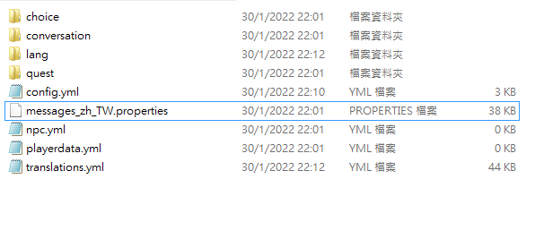
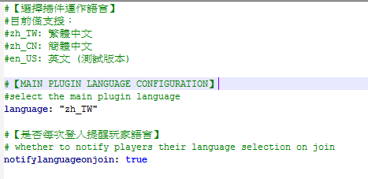
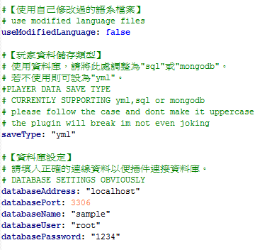
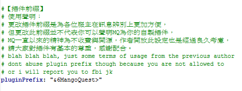
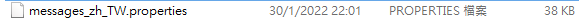
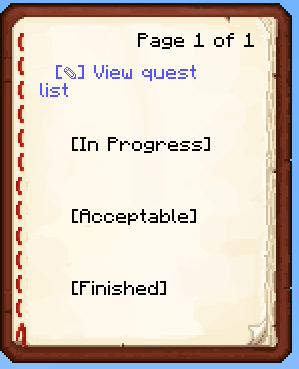
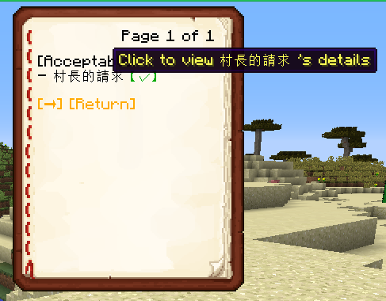
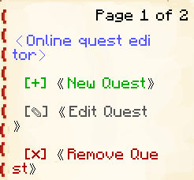

Overview 概覽
This section educates you on how to quickly set up MangoQuest (the functions of the old version) and gives an overview of functions before exploring all the functions of the plugins
本節將教您如何快速設置 芒果任務 (舊版的主要功能)，並快速摸索功能而上手
Getting Started 開始使用
For Old Users: 致舊用家
New version mangoquestreloaded is totally backward compatible with the old project mangoquest so no roundabouts are needed.
新版本的 mangoquestreloaded 完全向後兼容舊項目 mangoquest，因此不需要迂迴的方法來執行。
Instalation 安裝
For Old Users: 致舊用家
Delete the old MangoQuest.jar in the plugins folder, then drag the new MangoQuestReloaded-(version).jar into the pluigns folder, then start the server and the plugin. Then everything is all set :)
刪除plugins文件夾中舊的MangoQuest.jar，然後將新的MangoQuestReloaded-(version).jar拖到pluigns文件夾中，然後啟動服務器和插件。 然後一切就都準備好了:)
New users can just drag the jar into the plugins folder then start the server, then the MangoQuestReloaded folder along with the necessary files will be generated for you. 新用戶只需將 jar 拖到 plugins 文件夾中，然後啟動服務器，就會為您生成 MangoQuestReloaded 文件夾以及必要的文件。
Preparation Before Using 使用前準備
After starting the server, you will have several files at your disposal. Before you start using the plugin, there will be a few configurations you need to make.
啟動服務器後，您將擁有幾個文件供您使用。 在開始使用插件之前，您需要進行一些配置。

After running the server, your folder should now briefly resembles that of my folder with a few folders and a few files.
The choice,conversation,quest folders along with the npc.yml will be your main working area since most of your quests available to players will be siutated in these 3 folders and the npc configurations will be in npc.yml. The rest are the settings (except for playerdata.yml which stores perplayerlanguage data, which is irrelevant for now.).
運行服務器後，您的文件夾現在應該與我的文件夾類似，其中包含一些文件夾和一些文件。
選擇、對話、任務將是您的主要工作區域，因為您可供玩家使用的大部分任務將位於這 3 個文件夾中。 其餘的都是插件設置的文件（除了 playerdata.yml 存儲 perplayerlanguage 數據，現在無關緊要。）。
For now, we will only consider two files: config.yml and translations.yml
現在，我們只考慮兩個文件：config.yml 和 translations.yml

We first want to set the main display language of the plugin, since this is the area the players look at the most. It matters for all the languages of in-game and console displays.Currently, there are three languages supported, namely zh_TW(taiwanese) ,zh_CN(chinese) and en_US(english). The default is set to be taiwanese.
我們首先要設置插件的主要顯示語言，因為這是玩家最關注的區域。 這對遊戲內和控制台顯示的所有語言都很重要。目前支持三種語言，即zh_TW（台灣）、zh_CN（中文）和en_US（英文）。 默認設置為台灣語。

Then we will take a look at the second language-related option, which is whether to use modified language files. In simple, it is whether the plugin allows you to modify the language properties. I know this is a stupid option, but you want to set it to true since i am pretty sure everyone wants to change how their plugin looks instead of sticking to the default.
那我們再來看看第二個語言相關的選項，即是否使用修改過的語言文件。 簡單來說，就是插件是否允許你修改語言properties檔案。 我知道這是一個愚蠢的選項，但是您想將其設置為 true，因為我很確定每個人都想更改其插件的外觀而不是堅持默認設置。
The next thing we want to look at is the saveType and the database credentials. These two options determine where the player data will be saved at. Currently, there are three save formats that are supported: sql,yml and mongodb. 預設爲yml,如果你想跨伺服器同步資料的話，請考慮使用sql或mongodb.

Another thing we want to look at in this section is the plugin prefix settings. It is quite self-explanatory that this will be the prefix (the text that is placed before every message sent by the plugin). You can change it to however you want, just make sure not to abuse it too much and claim that its your plugin, it is stupid.
在本節中我們要查看的最後一件事是插件前綴設置。 不言自明的是，這將是前綴（放置在插件發送的每條消息之前的文本）。 您可以將其更改為您想要的任何方式，只要確保不要濫用它並聲稱它是您的插件，這是白癡的,哈哈。

The last thing we will check is the properties file. It contains all the messages that plugin will send to both players and admins. If you have changed the plugin language in the config.yml, please reload the plugin or the whole server such that the properties file of other languages (CN/US) will appear. You can change it to make the plugin looks the way you want.
我們要檢查的最後一件事是屬性文件。 它包含插件將發送給玩家和管理員的所有消息。 如果您在 config.yml 中更改了插件語言，請重新加載插件或整個服務器，以便出現其他語言（CN/US）的屬性文件。你可以對其進行修改以改變插件顯示方式。
At this rate all the boring setups are completed. You can go ahead and /mqa reload or reload the plugin however way you want.
到了這裏所有設定已經完成。你可以去打/mqa reload(重新載入指令) 或自行重新載入插件，以套用更新。
Next, we will look at some in-game work.
接下來，我們會看看游戲中的設置。
in-game settings 游戲中設置
As aforementioned, in game mostly you will be dealing with the book GUI. There are three main commands concerned in this settings, they are /mq q, /mq e and /mqa commands. The frst is the command that the player will be using to open the book journal and manage their quest progress. The latter two will be the one you are expected to use the most, which concerns the use of the admin interface. There are many admin commands at the moment, but we will just go through some of the most important commands for the most important functions.
如前所述，在遊戲中，大多數情況下您將會在書本 GUI度過。 這個插件主要涉及兩個命令，一個是/mq q，一個是/mqa。 這些都是用來打開不同的書本界面。前者是玩家將用來打開書籍日記並管理他們的任務進度的命令。 後者將是您最常使用的功能,也是你的管理員界面。 目前有許多管理命令，但我們將只介紹一些最重要的命令以實現最重要的功能。
使用指令的和其他權限 Permissions setup for using commands and other features
Before doing anything in-game, permissions are required in case you are not op. The permissions are listed as below:
在遊戲中做任何事情之前，如果您不是GM，則需要權限。 權限列表如下：
MangoQuest.takeQuest.(任務QuestID) --- if the quest is set to require permissions, then players need permissions to take this quest. 如果任務設置為需要接受任務的許可，則需要此權限才能接受此任務
MangoQuest.AdminCommand --- The permission to use admin command 使用管理員命令的權限
MangoQuest.ConversationEditor --- The permission to use conversation editor 使用對話編輯器的權限
mangoquestreloaded.bungeecord --- The permission to check if player is capable of sending bungeecord command in quest trigger 玩家是否有權在任務觸發使用bungeecord 指令 (covered later 會在後面的内容涵蓋)
Book GUI in action 書本界面演示 (/mq q)
By doing /mq q, you can see a list of quests related commands. The most important tool is /mq q list, which opens the quest journal. The others are commands that are functions that are already included in the book interface.
通過執行 /mq q，您可以看到與任務相關的命令列表。 最重要的工具是 /mq q list，它可以打開任務日誌。 其他的命令是已經包含在書籍界面中的功能。

This is the main interface you use to take/quit quest/check progress. The interface is just a very simple click GUI. Most text in the book GUIs are clickable to do stuffs. Using this for an example, the three quest states (acceptable,in progress, finished) are all buttons to show the quests under the button categories.
這是您用來接受/退出任務/檢查進度的主界面。 該界面只是一個非常簡單的點擊GUI。 書中 GUI 中的大多數文本都是可點擊的。 以此為例，三個任務狀態（可接受、進行中、已完成）都是按鈕，用於顯示按鈕類別下的任務。

If you do not understand the uses of some buttons, do not panick. Upon hovering buttons, there will be hints to tell you what that button does in most cases.
如果您不了解某些按鈕的用途，請不要驚慌。 懸停按鈕時，將有提示告訴您該按鈕在大多數情況下的作用。
Just try clicking every text button ever in the book GUI and you may have unexpected surprises!
只需嘗試單擊本書 GUI 中的所有字眼按鈕，您可能會遇到意想不到的驚喜！
Lets make some quests! 來做任務吧! (/mq e)
Most of the quests are made through the use of Book GUI as said, which is the online quest editor. The command to bring it up is /mq e.
如前所述，大多數任務都是通過使用 Book GUI 完成的，這是在線任務編輯器。 啟動它的命令是 /mq e。

The options are quite self-explanatory. There are 3 buttons: New quest, edit quest and remove quests.
這些選項是挺明顯的。 有 3 個按鈕：新任務、編輯任務和刪除任務。